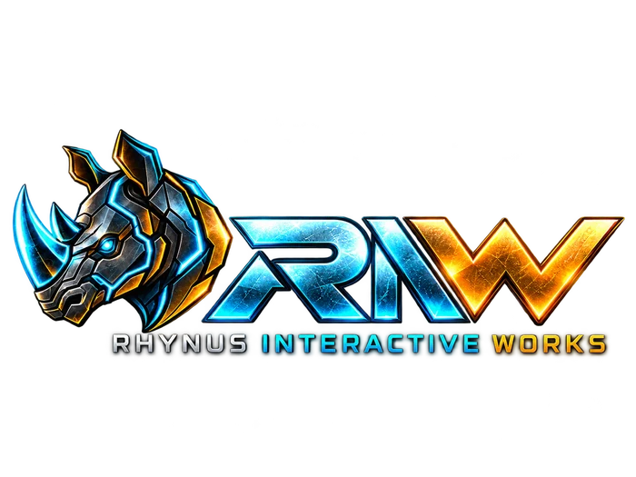

Preparando partida
Mi Business Model Canvas
Escribe tus propias ideas. Se guardan en este navegador.

¡Dale forma a tu idea de negocio!
9 desafíos · Un Canvas para tu proyectoAprende los nueve bloques de tu modelo de negocio
Piloto local v0.3 · Sin conexión · Sin cuentasEscribe tus propias ideas. Se guardan en este navegador.